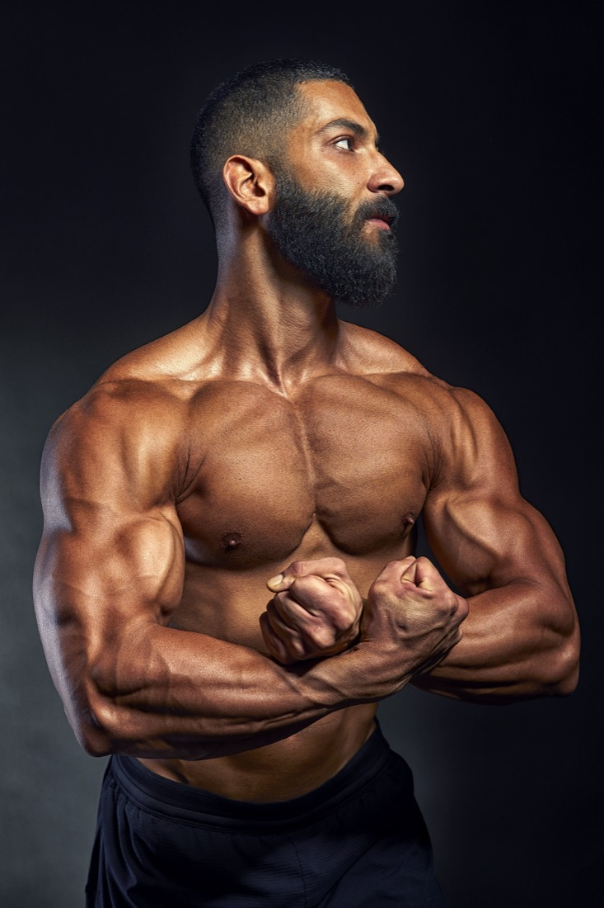
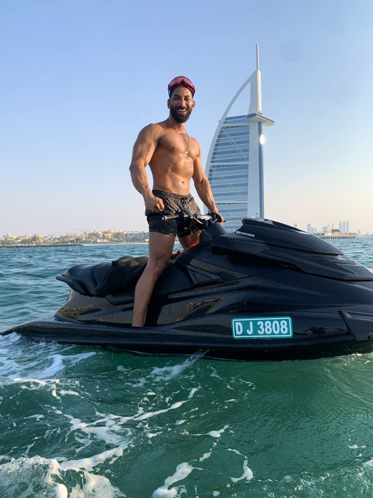
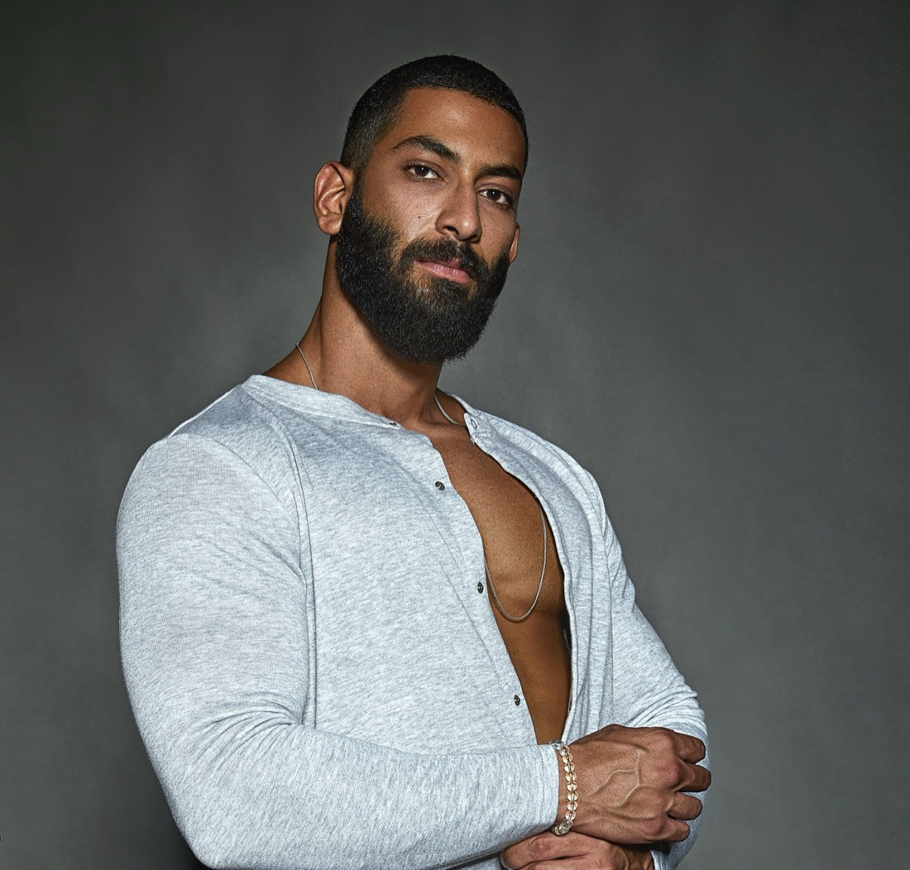

Most people quit in the first two weeks, when nobody explains anything. With me, those are the two weeks I'm there every day.
Free · 3 minutes · Abdelrahman Ayman, 10 years coaching

Same plan as everyone else. No one to ask when a weight feels wrong or the scale stops moving.
It tracks everything and explains nothing. You follow it until life gets busy, then it's gone.
Fast replies while you're paying. "Yes" or "no" when you need the reason. Gone after the sale.
None of them failed because you're lazy. They failed because nobody taught you.
In your first 14 days you have a hundred questions: what to buy, how a movement should feel, why the plan says what it says. I answer every one on WhatsApp, with the whole reason, not one word.
By week three you're not following a plan anymore. You understand it.
A professor, a banker, an art director, a man working alone abroad, a woman who later became a mother. Drag each photo.
Shared with each client's permission. Results depend on the person, the plan and the work.
I'm too busy
Mohammad works abroad and lives alone. Dr Afifi is a professor with no free hours. Both got there with short workouts built into the day they already had.
I don't have a gym
Seif did his 12 weeks at home in the 2020 lockdown with a pair of dumbbells: 15% less body fat, 5 kg more muscle.
I've lost weight before and it came back
That's why the goal is never a wedding or a holiday. Nada trained with me in 2021. Years later, as a mother, she still knows exactly how to look after herself.
I'm worried about my health
Saeed came in with high cholesterol and short breath. We worked on his nutrition and training, and his bloodwork came back in range. Where it matters, we work with medical specialists.
Is this for women?
Yes. Sama and Nada are two of many. Most women who train with me came through a friend who did it first.
Four questions. You get your score and the path that fits your life. If it's the 12 weeks, I read your answers before we speak.
I got the body I dreamed of at 20 and realised I had no idea how it happened. I spent the next ten years finding out: nutrition clinics, the gym floor, my own company, the stage in Cairo and Dubai.
I nearly left this industry when I saw how much of it is selling and running. I stayed because of people like Mostafa, Nada and Seif, who changed their whole lives, not just their bodies.
If you're ready to be honest and do the work, I'll be there for every question.
AbdelrahmanHis Philips Middle East reel reached more than 3.3 million people, against the brand's own following of about 130,000. Mr Beard's biggest campaign posts are his face.


Or you'll still be looking for the next plan. Your call.
Start the free assessment →